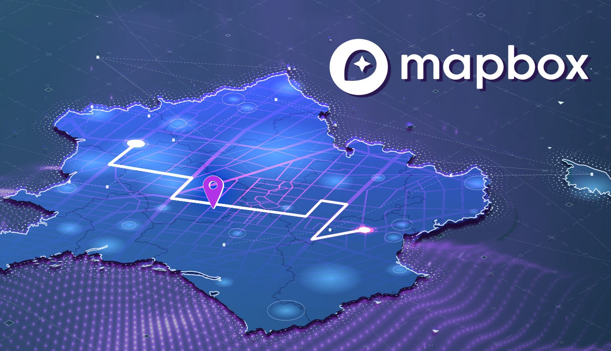

Webmapping for beginners
Making Maps with JavaScript
By Niene Boeijen
Workshop & Presentation
workshops.this-way.nl
Niene Boeijen


Propedeuse Art Academy
MSc Geo Information Science
Internship Geo Web Visualization
Maptime Amsterdam & Utrecht
Web Cartographer
Freelance Web Map Developer
I am a web cartographer
I make maps
online
interactive
Back-end to front-end
Implement all through code
NieneB.nl
Some things I make:


Tools I use:
- QGIS
- PostgreSQL, PostGIS
- GeoServer, MapServer, Mapproxy, Tegola
- JavaScript: Leaflet.js, OpenLayers, MapboxGL.js, D3.js
- Ubuntu, Linux command line tools
- React, Vue, Hugo , Reveal
- Open data, OSM, BAG, BGT, Top10NL etc.
Presentation Today:
| Introduction |
| Raster tiles |
| Vector tiles |
| Web Mapping in JavaScript |
| Leaflet.js, MapboxGL.js, D3.js |
| Take a small break |
Workshop Leaflet
| Leaflet part 1 | 30 min |
| Leaflet part 2 | 30 min |
| Leaflet part 3 | 30 min |
| Leaflet part 4 | 30 min |
| Show & tell | |
Goal of today!
At the end of this workshop, you will have your own web page with an interactive map! Including custom data and different background maps, of the area you want to show! Your web page will be hosted on Github, so you can immediately share your progress with all your family and friends!

Beginners

For beginners means: if you have NO knowledge of JavaScript, HTML, CSS and Leaflet.js this workshop will help you get started!


What is going on?
The realization of the interactive map as an experience, not just a map design.[source]
- You need to be able to find, manipulate, and store spatial and non-spatial data.
- You need to be able to design a functional and attractive cartographic representation of that data as well as the UI controls to operate it
- You need to be able to implement that design through code
Getting my map to the web?

What is a web map?
Analogue paper maps
| Digital maps | VS | Web Maps |
|---|---|---|
| Data | Tiles, styles and servers | |
| On the computer | View in a browser | |
| Calculate, analyze | scroll, pan, zoom |

google.com/maps
openstreetmap.org

Open Geospatial Consortium - OGC standards
- WMS Web Map Service
- WMTS Web Map Tile Service
- WFS Web Feature Service
Defacto - Community standard
- Google/OSM (XYZ)
- TMS Tile Map Service
- QuadTrees (microsoft)
Tiled web map
a little History
Digital maps & GIS software
1996 Mapquest first with a web service!
But really slow to load..

2004 - Endoxon found a way for quick online mapping!
2005 Google Maps took over!
The solution?
Tiles!
Tiles
All tiles size 256x256 pixels
Placed in a grid, sharing boundaries
Seamless map
All these little tiles load way faster than one big map!
We call this slippy maps
Zoom levels
Each zoom level has its own set of tiles!
Zoom level 0: 1 tile for the whole world.
Increases exponentially...
Zoom level 1: 4 tiles
Zoom level 2: 16 tiles
etc.
 Map with tile bounds
Map with tile bounds
Styling & Serving tiles
Tiles are styled and rendered in advance
Tiles are just images on the web
http://tile.openstreetmap.org/5/16/10.png
{kind=link}
/z/x/y


Styling tiles
styling per zoom level
Lot's and lot's of geo data!

Disadvantages Raster Tiles
No interaction with objects
No information available about objects
Multiple visualizations = multiple tile sets
elaborate & hard styling syntax
Vector Tiles
the newest technology!
From Raster to Vector

Vector Tile

Arrays in a 256 x 256 matrix
Same tiling schema as Raster png tiles.
Binary format
No colours
Simplifies geometries

Advantages Vector tiles
Rendering is done on client side
Custom styles on client side
Small tile size. Fast
High resolution.
Direct access to feature information.
WebGL
the rendering happens in your browser with the help of your device's graphics processing unit (GPU).
+ rotating and tilting the map (3D)
+ smooth/infinite zooming
WebGL is widely supported in modern browsers
raster tiles

vector tiles

Standards
Mapbox Vector Tile Standard.Based on the binary protocal buffer (.pbf) from Google.
Standard already used by Esri.
Web Mercator projection, Google tiling scheme.
Formats
.mvt - .pbf
.mbtiles
Want to know more?
About Vector-tiles from Mapbox
Open map tiles alternative
Cartiqo our own alternative
So how do I make a Web Map?

Making a Web Page


New to HTML & CSS?
Start with Making a web page
Or use Code Academy

a map is a lot!
- Map Interface and Interaction
- Zoom, panning, clicking etc.
- Map events
- popups markers
- Tiles (raster/vector) as Base Layer
- Additional Data
- File (GeoJSON)
- WMS,WFS
- Tiles
JavaScript!
Puts it all together,
Tiles, content, interaction
JavaScript Library
Including a JavaScript library in your code is like copying and pasting someone else's code into yours. You have access to everything in that library.
In our case, it's a bunch of cool tools to make web maps and give them familiar functionality.
Web Map Building blocks
Data, styled, tiles, server:
Base Layer
Additional Data:
Vector Layers
Interface and Interaction
Zoom, panning, clicking etc.
JavaScript Libraries for Mapping
When to use what?!

Leaflet.js for simple light weight raster web maps
OpenLayers for more elaborate raster web map with more functionality
ArcGIS Javascript API if your client uses ESRI software
D3.js for data driven info graphics
MapboxGL.js for vector tiles
MapLibre for vector tiles open source alternative
Mapbox Studio for easy cloud solutions
CARTO and buisness intellegence & cloud solutions
HERE Maps and Google Maps API for navigation, Google services and commercial goals
Turf.js for geospatial computation in the browser
Main considerations
Open source vs closed source
Amount of Interactivity or GIS functionality
Amount of data to show
Raster vs Vector
projection
Let's look at:
Leaflet for Raster tile maps
MapboxGL.js / MapLibre for Vector Tile maps
D3.js for geo data visualizations
Leaflet.js
An Open-Source JavaScript Library for Mobile-Friendly Interactive Maps
simplicity, performance and usability
Developed by: Vladimir Agafonkin.
Weighing about 38 KB of JS.
Has all the mapping features most developers ever need.
Can be extended with Plugins
Well documented
What Leaflet does not do:
Provide data for you.
Provide the basemap.
Its not GIS
Leaflet is a framework
Raster tile base map providers


Leaflet quickstart
let map = L.map('mapid').setView([51.505, -0.09], 13);
L.tileLayer('http://{s}.tile.osm.org/{z}/{x}/{y}.png', {
attribution: '© OpenStreetMap contributors'
}).addTo(map);
Adding data layers
// ADD a WMS layer
let cbs = L.tileLayer.wms('https://geodata.nationaalgeoregister.nl/wijkenbuurten2018/wms', {
'layers': 'cbs_buurten_2018',
'styles': 'wijkenbuurten2018:wijkenbuurten_thema_buurten_gemeentewijkbuurt_percentage_eenpersoonshuishoudens',
'srs': 'EPSG:28992',
'format': 'image/png',
'transparent': true,
'opacity': 0.5
}).addTo(map);
Layers
Base Layer
Raster
Data Layer / Feature Layer
Vector
Projections
Use EPSG:28992 > Government in Netherlands obliged to use it!
MapboxGL.js
December 2020: Mapbox GL JS v2 is not free anymore
more infoPrevious Mapbox GL JS v1 is still available under the free and open BSD3 license
MapLibre!
https://maplibre.org/MapLibre docs overview
var map = new maplibregl.Map({
container: 'map',
style: 'https://api.maptiler.com/maps/streets/style.json?key=get_your_own_OpIi9ZULNHzrESv6T2vL', // stylesheet location
center: [-74.5, 40], // starting position [lng, lat]
zoom: 9 // starting zoom
});
style.json
{
"version": 8,
"name": "Mijn eigen Stijl",
"sprite": "url",
"glyphs": "url/{fontstack}/{range}.pbf",
"sources": {...},
"layers": [
{
"id": "background",
"type": "background",
"paint": { "background-color":"#FFFFFF" }
},
{
"id":"water",
"source": "osm",
"source-layer":"water",
"paint":{
"fill-color":"#0000ff"
}
},
{...}
]
}
Use MapLibre for
Customized background maps
Interactive data
WebGL rendering
Use MapboxGL.js for
3D maps
Provided data
Commercial projects
Example
Viewer energie transitieD3.js
Data Driven Documents
A JavaScript library for manipulating documents based on data
D3 helps you bring data to life using HTML, SVG, and CSS.
Developed by Mike Bostock
Allows you to bind data to the DOM and apply data-driven transformations to the document
HTML, SVG, and CSS
Fast
supports large datasets
Dynamic, interaction, animation
SVG
Text-based, mathematical representation of an image.
Vector Graphics
Can be searched, indexed, scripted, and compressed!

D3 is NOT
a slippy map creator
Not based on tiles!!
Mostly used for:
Charts (pie, line), Tables, Maps, Networks, animation & interactivity
Gimme the code!
How does it work?
Examples
Let's Map!
What will we do?
Set up a simple HTML page and add Leaflet.js
Add a Base Map
Adding markers, circles, polygons
Change the projection
Add custom data
Use Notepad ++
With Syntax Highlighting!
Watch your line indentation!
For the map
Base map = tiles already on the internet
Example data is provided
Custom data : Feel free to use your own!
If you use your own data
NOTE:
Not to big datasets
{kind=link}
Remove any un-used attributes!
Attribute names are crucial! Simple, short. No spaces. No symbols
Export to GeoJSON: WGS84 or EPSG:4326
Points, Polygons or Lines?
Running a local server
C:\Python27\ArcGIS10.5\python -m SimpleHTTPServer
Problems or questions?
Use the INTERNET!
Use the Leaflet documentation!
StackOverflow is awesome!
Use the D3.js documentation!
Use bl.ocks.org
Ask me
Be creative!

There is more to find on the Internet
Do not keep yourself to the assignments!!
Workshop Leaflet
| Leaflet part 1 | 30 min |
| Leaflet part 2 | 30 min |
| Leaflet part 3 | 30 min |
| Leaflet part 4 | 30 min |
| Show & tell | |
Workshop
workshops.this-way.nl
Thank you!
Feedback please?
Stay in touch or questions:
niene@this-way.nl
| @BNiene |
| NieneB |
| NieneB.nl |
| Niene Boeijen |
| volvo_343_dl_1980 |
Presentation and workhsop thanks to:
In random order:
Webmapper
All contributors from Mapschool.io
Maptime Boston
Lyzi Diamond
Wikipedia
Leaflet.js
D3.js
Webmapper
Waag Society
Maptime Amsterdam
Maptime Utrecht
Maptime IO
Code Academy
tutorials of Scott Murray
Noah Veltman
Mike Bostock
Giphy
BFRO
Alan McConchie
Beth Schechter